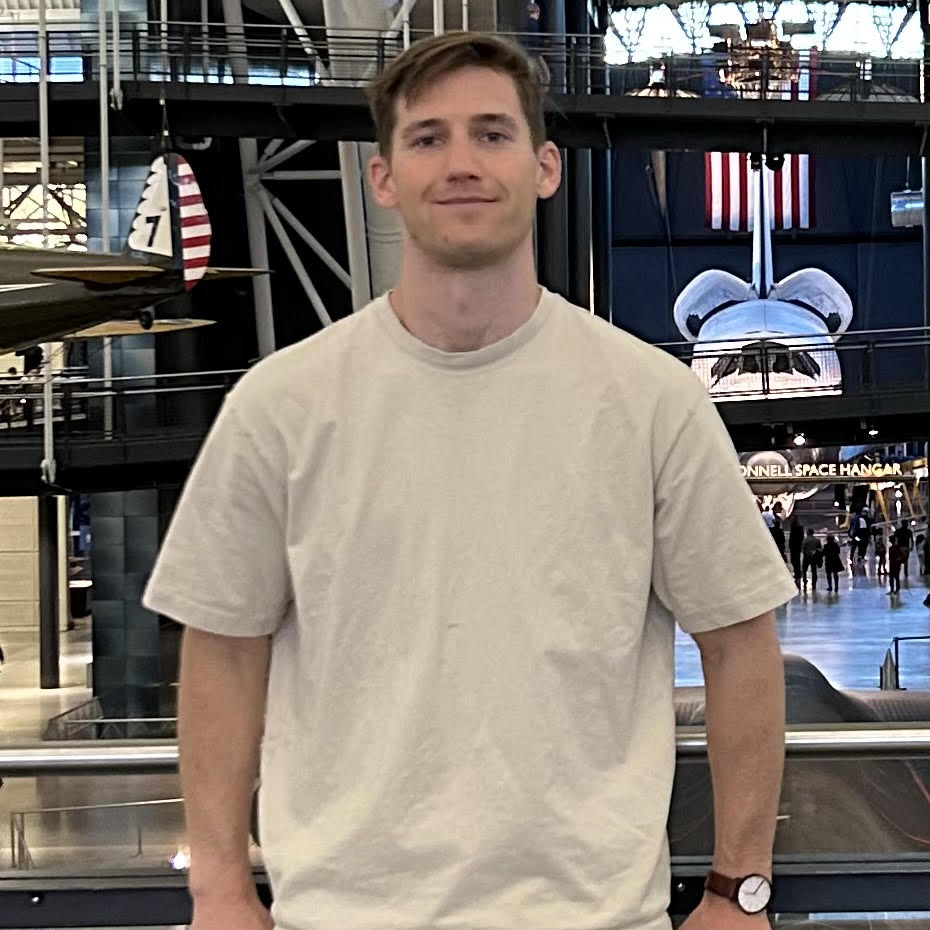

<!doctype html>
<html>
<head>
</head>
  <title>About Me</title>
  <meta name="description" content="About Me">
  <meta name="keywords" content="nicholas gabriel phd student george washington university physics complex systems ai deep learning">
</html>

<body>
  <h1>Nicholas A. Gabriel</h1>
  <p> <a href="resume.pdf">CV</a> | <a
  href="https://scholar.google.com/citations?user=qffTnZsAAAAJ&hl=en">Google Scholar</a> | <a
  href="https://github.com/nngabe">GitHub</a> | <a
  href="https://www.linkedin.com/in/nicholas-gabriel-682540b6/">LinkedIn</a></p>
  
  


  <h2>About Me</h2>
  <style> 
  p
  {
      width:1000px; 
      word-wrap:break-word;
  }
  </style>
  <p>I am a PhD candidate in the Physics Department at The George Washington University. 
     I study social dynamics and influence using explainable AI,
     with a particular emphasis on malicious and extremist actors. This work is highly interdisciplinary 
     and takes place at the intersection of the social sciences, complex systems physics, and informed AI. We are investigating the next generation of neural tools to leverage and 
     explain heterogenous social system data. 
    <br> <br>
    A major theme of my research is the interplay between complex systems physics and AI techniques: developing novel architectures for solving inverse problems 
     in complex systems, and designing neural analogs of techniques used in complex systems. The most useful neural techniques for modeling complex systems come from graph learning and operator learning, and I design neural "glue" between these architectures such that different representations can inform one another. 
    <br> <br>
    In my spare time I enjoy cycling, making espresso, and watching train videos. 
  </p>

  <h2>Publications</h2>
  <ul style="line-height:1.3;">
    <li><a href="https://www.nature.com/articles/s41598-023-49676-z">Inductive detection of Influence Operations via Graph Learning.</a><br>
    <b>Nicholas A. Gabriel</b>, David A. Broniatowski, Neil F. Johnson<br>
    <i>Scientific Reports</i>, 2023.</li>
    <li><a href="https://www.oajaiml.com/uploads/archivepdf/57451124.pdf">Using Neural Architectures to Model Complex Dynamical Systems.</a><br>
    <b>Nicholas A. Gabriel</b>, Neil F. Johnson<br>
    <i>Advances in Artificial Intelligence and Machine Learning</i>, 2022.</li>
    <li><a href="https://www.nature.com/articles/s41598-021-89467-y">Online hate network spreads malicious COVID-19 content outside the control of individual social media platforms.</a><br>
    Nicolas Velasquez, Rhys Leahy, Nicholas Restrepo, Yonatan Lupu, Richard Sear, <b>Nicholas Gabriel</b>, Om Jha, Beth Goldberg, Neil Johnson<br>
    <i>Scientific Reports</i>, 2021.</li>
    <li><a href="https://www.nature.com/articles/s41586-020-2281-1">The online competition between pro- and anti-vaccination views.</a><br>
    Neil Johnson, Nicolas Velásquez, Nicholas Restrepo, Rhys Leahy, <b>Nicholas Gabriel</b>, Sara El Oud, Minzhang Zheng, Pedro Manrique, Stefan Wuchty, Yonatan Lupu<br>
    <i>Nature</i>, 2020.</li>
    <li><a href="https://ieeexplore.ieee.org/stamp/stamp.jsp?arnumber=9091126">Quantifying COVID-19 content in the online health opinion war using machine learning.</a><br>
    Richard F Sear, Nicolás Velásquez, Rhys Leahy, Nicholas Restrepo, Sara El Oud, <b>Nicholas Gabriel</b>, Yonatan Lupu, Neil Johnson<br>
    <i>IEEE Access</i>, 2020.</li>
  </ul>

    <h2>Presentations</h2>
  <ul style="line-height:1.4;">
    <li><b>The George Wasington University</b> (ENIGMA seminar, 45m presentation) [<a href="https://www.dropbox.com/scl/fi/2py8doe6gaqjwv9g6pcuw/Multiscale_operator_learning_for_social_dynamics.pdf?rlkey=1ljnspm5zjjvnc9mn66qfcvm6&dl=0">slides</a>]<br>
    <i>"Multiscale Operator Learning for complex social systems"</i>, 10/4/2023.</li>
    <li><b>Brown University</b> (CRUNCH group meeting, 40m presentation) [<a href="https://www.dropbox.com/scl/fi/2py8doe6gaqjwv9g6pcuw/Multiscale_operator_learning_for_social_dynamics.pdf?rlkey=1ljnspm5zjjvnc9mn66qfcvm6&dl=0">slides</a>]<br>
    <i>"Multiscale Operator Learning for complex social systems"</i>, 9/15/2023.</li> 
    <li><b>IC2S2 2022</b> (Conference talk, 15m presentation) [<a href="https://www.dropbox.com/scl/fi/44ifnifzvj4mn8pejtpuv/Detection_of_Information_Operations_using_Graph_Neural_Networks__IC2S2_presentation_.pdf?rlkey=fneix3sfo9sd4ofwslhjtea5n&dl=0">slides</a>]<br>
    <i>"Automated Detection of Information Operations Using Graph Neural Networks"</i>, 7/21/2022.</li>  
    <li><b>Brookhaven National Laboratory</b> (PROSPECT group meeting, 20m presentation) [<a href="https://www.dropbox.com/scl/fi/48k195i475yz34hptiuao/Mass_calibration_for_PROSPECT__5635959pkmbcy_.pdf?rlkey=9tskq5sudclozjmf1tpdei4l0&dl=0">report</a>]<br>
    <i>"Mass calibration for PROSPECT"</i>, 8/10/2016.</li>
  </ul>

</body>

</html>
